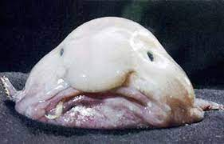

Blop

Description
For now, robots cannot eat food. But what if that were to change someday?
This is why I'm so passionate about Blop. I believe that when robots do start eating solids, Blop will become a robot food staple.
Ingredients
- 1 cup oil
- Scrap metal
- 10 AAA batteries
- 6 inches copper wires
- 2 cups Antifreeze
- 16oz Frozen peas
Steps
- Mix all ingredients in a ziplock bag. The bag can be storebrand if you're stingy.
- Empty contents of bag into black hole.
- Wait for spaghettification.
- Enjoy! Add robopastasauce if desired.